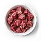
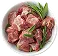
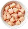
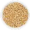
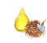
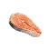

Влажные корма


Поддержка здоровья. Чистый состав. Проверенная формула.


Не менее 71% мяса, без сои, ГМО и усилителей вкуса. Только мясо, овощи, ягоды и натуральные добавки. Противовоспалительная, антиоксидантная и микробиотическая защита в самой основе корма

JUST DOG — это не просто корм. Это функциональное питание,
созданное по принципам биохакинга.
Мы верим, что собака — это полноценный член семьи, и её рацион
должен быть сбалансированным
Только высококачественные источники белка




Только тщательно подобранные растительные компоненты

Дополняют состав
тыква, морковь, цукини, свекла, яблоко, груша, черника,
клюква, брусника, шиповник и шпинат

Высококачественные жиры и масла, которые являются отличным источником омега-3 и омега-6



Just Dog Holistic - это линейка кормов, разработанная для собак всех пород и возрастов, особенно с чувствительным пищеварением и склонностью к аллергии

С ТЫКВОЙ, МОРКОВЬЮ И ЦУКИНИ
Полнорационный сбалансированный гипоаллергенный влажный корм для собак всех возрастов
340 г
Купить в зоомагазине Подробнее
С ЯБЛОКОМ, ЧЕРНИКОЙ И КЛЮКВОЙ
Полнорационный сбалансированный гипоаллергенный влажный корм для собак всех возрастов
340 г
Купить в зоомагазине Подробнее
ЯГНЕНОК, ИНДЕЙКА, КРОЛИК, КОНИНА
Полнорационный сбалансированный гипоаллергенный влажный корм для собак всех возрастов
340 г
Купить в зоомагазине Подробнее
С ТЫКВОЙ, МОРКОВЬЮ И ШПИНАТОМ
Полнорационный сбалансированный гипоаллергенный влажный корм для собак всех возрастов
340 г
Купить в зоомагазине Подробнее
С ГРУШЕЙ, ЧЕРНИКОЙ И БРУСНИКОЙ
Полнорационный сбалансированный гипоаллергенный влажный корм для собак всех возрастов
340 г
Купить в зоомагазине Подробнее
С ТЫКВОЙ, ЦУКИНИ, ШПИНАТОМ И КЛЮКВОЙ
Полнорационный сбалансированный гипоаллергенный влажный корм для собак всех возрастов
340 г
Купить в зоомагазине Подробнее
Эта линейка полнорационных сухих кормов создана для взрослых собак всех размеров и пород.